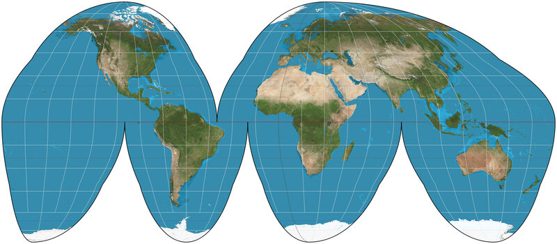
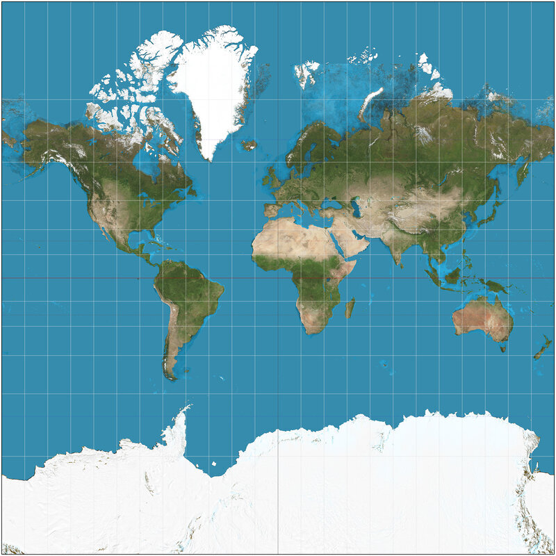
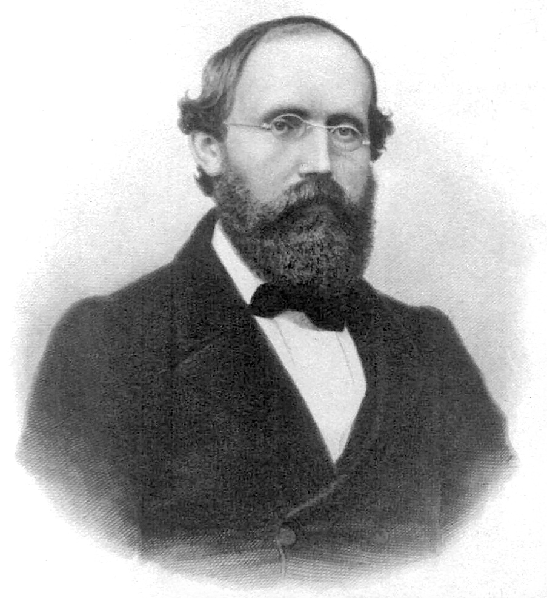
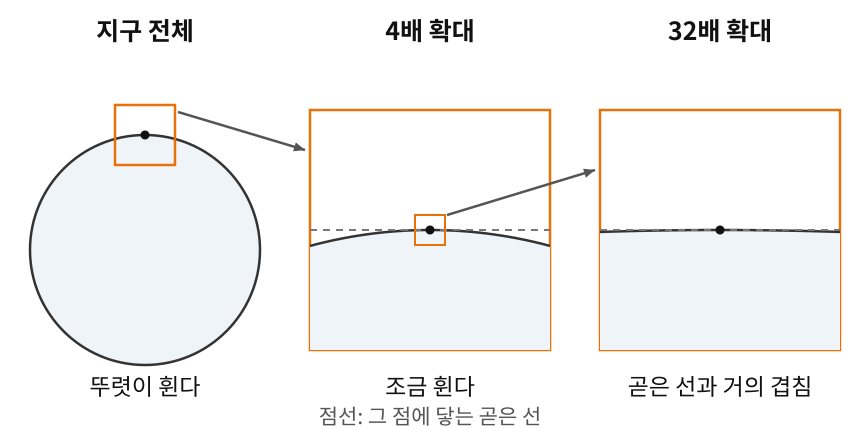
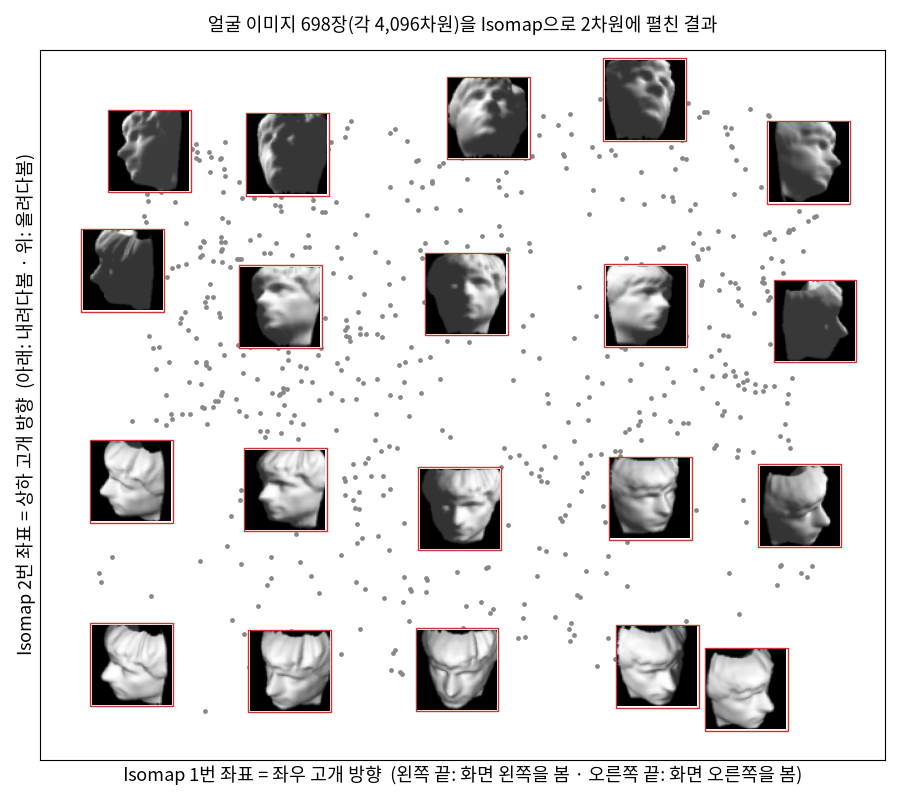
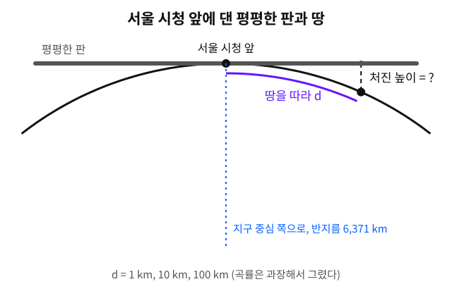
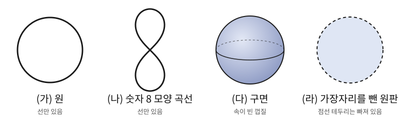
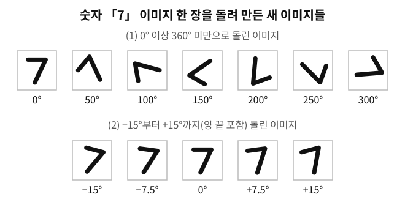

좌표 하나로는 지구를 담을 수 없다
출발 문제
오렌지 하나를 떠올려 보자. 껍질을 벗겨서 식탁 위에 평평하게 펴려고 하면 어떻게 되는가? 반드시 찢어지고, 억지로 펼치면 어딘가가 겹치고 어딘가가 늘어나고 어딘가가 구겨진다. 구면의 껍질을 평면 위에 왜곡 없이 펼치는 것은 불가능하다.

지도 제작자들은 이 사실을 수백 년간 체감해 왔는데, 16세기 항해가들에게는 정확한 세계지도가 생사의 문제였다. 1569년, 플랑드르의 지리학자 헤라르뒤스 메르카토르(Gerardus Mercator)는 유명한 메르카토르 도법을 발표한다. 이 지도에서 항해사는 직선으로 코스를 그으면 되므로 항해에 편리했다. 하지만 그 대가로 실제로는 아프리카가 14배 넓은데도 그린란드가 아프리카와 비슷한 크기로 보인다.

메르카토르 도법만의 문제가 아니라, 어떤 도법을 쓰든 왜곡은 피할 수 없다. 면적을 보존하면 각도가 틀어지고 각도를 보존하면 면적이 뒤틀려서, 거리, 면적, 각도를 동시에 보존하는 세계지도는 존재하지 않는다. 세 가지를 함께 보존할 수 없다는 사실은 도법을 고르는 취향과 상관없이 수학으로 증명된다.
그런데 이상한 점이 있다. 세계지도에서는 그린란드가 저렇게 부풀어 오르는데, 우리나라 지도나 동네 지도를 펼쳐 놓고 왜곡을 느껴 본 적이 있는가? 좁은 지역만 그린 지도에서는 왜곡이 거의 눈에 띄지 않고, 왜곡이 심해지는 것은 지구 전체를 한 장에 억지로 담으려 할 때다.
그렇다면 이렇게 해 볼 수 있지 않을까? 넓은 땅을 한 장에 담지 말고, 왜곡이 거의 없는 작은 지도를 여러 장 이어 붙여서 지구 전체를 덮는 것이다. 완벽한 지도 한 장은 불가능해도, 여러 장의 불완전한 지도로는 가능할지 모른다.
매니폴드: 어디를 확대해도 평면인 공간
여러 장의 지도로 나누어 담으려면, 먼저 지도 한 장이 맡을 조각이 평면처럼 다뤄질 수 있어야 한다. 앞에서 좁은 지역의 지도는 왜곡이 거의 없다고 했다. 이 느낌을 조금 더 정확히 말해 보자.
각 조각은 평면처럼 다룰 수 있다. 충분히 작은 영역에서는 지구 표면이 사실상 평평해서, 동네 지도에서 땅의 곡률(휘어진 정도)을 느끼는 사람은 없다.
지구 표면만 그런 것이 아니라, 어느 점에서든 그 둘레만 확대해 보면 평면과 구별할 수 없는 공간은 많다. 이런 공간을 하나의 개념으로 묶어 낸 사람이 있다.
역사: 베른하르트 리만 (Bernhard Riemann, 1826–1866)

1854년 6월 10일, 괴팅겐 대학교. 스물일곱 살의 수학자 베른하르트 리만이 교수자격 취득을 위한 강연 무대에 서고, 청중 속에는 그의 스승이자 당대 최고의 수학자 카를 프리드리히 가우스가 앉아 있다.
관례상 후보자는 세 가지 주제를 제안하고, 심사위원회가 그중 하나를 고른다. 리만은 세 번째 주제를 "기하학의 기초에 놓여 있는 가설에 대하여(Über die Hypothesen, welche der Geometrie zu Grunde liegen)"라고 적어 넣었다. 앞의 두 주제는 이미 준비해 두었고 그중 하나가 뽑히기를 바랐는데, 가우스가 바로 세 번째 주제를 골랐다. 리만은 형제에게 보낸 편지에 "다시 좀 곤란해졌다"고 적었고, 이듬해 봄에야 이 주제를 붙들고 강연 원고를 썼다. 그렇게 수학사에서 가장 영향력 있는 강연 중 하나가 탄생한다.
리만의 핵심 통찰은 이것이었다: 유클리드 기하학은 기하학의 유일한 형태가 아니다. 공간이란 국소적으로(한 점 가까이만 보면) 좌표를 붙일 수 있는 임의의 대상이며, 그 위에서 거리와 곡률은 장소마다 달라질 수 있다. 이 강연에서 리만은 오늘날 우리가 "매니폴드"라고 부르는 개념을 처음 내놓았다. 전체를 하나의 좌표로 덮을 수 없지만, 조각마다 좌표를 붙이고 조각 사이의 번역 규칙을 정하면 되는 공간이다.
가우스는 이 강연을 듣고 교수회에서 돌아오는 길에 동료 물리학자 빌헬름 베버(Wilhelm Weber)에게 "깊은 감명을 받았다"고 말했다고 전해진다. 하지만 리만의 아이디어가 물리학에서 꽃을 피우려면 60년이 더 필요했다. 1915년에 아인슈타인이 일반상대성이론에서 시공간을 4차원 매니폴드로 나타냈을 때다.
리만 자신은 결핵으로 서른아홉에 세상을 떠났다. 그가 남긴 강연 원고는 수식을 거의 쓰지 않은 짧은 글이었지만, 그 안에는 이후 150년간 전개될 미분기하학이 풀어 갈 연구 계획 전체가 담겨 있었다.

강연 원고에 수식이 거의 없었다는 게 신기해요. 지금 교과서라면 매니폴드 정의는 몇 줄이면 끝나잖아요.

그 몇 줄을 쓸 재료가 1854년에는 없었어요. 바깥 공간 없이 조각과 번역 규칙만으로 공간을 세우는 정의는 1913년 바일의 책에 가서야 나오고, 컴팩트라는 이름도 1906년에야 붙어요.

음, 그럼 그때 사람들은 곡면을 뭘로 상상했을까요? 다 3차원 공간 안에 놓인 모양이었을 것 같은데요.

그게 벽이었어요. 지구 표면은 바깥에서 내려다볼 수 있지만, 리만이 말한 공간에는 아인슈타인의 4차원 시공간처럼 바깥에서 내려다볼 자리가 없는 것도 들어가요.

바깥으로 나가 볼 수 없으면 안에서 재는 수밖에 없겠네요. 동네 지도만 들고 지구 모양을 알아내라는 거랑 비슷하고요.
안에서 바로 잴 수 있는 건 한 점 가까이뿐이니까… 그래서 리만이 한 점 가까이에 좌표를 붙이는 데서 출발한 거구나.
그럼 바깥 없이 한 점 둘레만 보고 「평면처럼 생겼다」는 걸 정의로 적으려면, 무엇과 무엇을 견주어야 할까요?
확대하면 평면: 매니폴드의 정의
리만이 씨앗을 뿌린 개념을 오늘날의 말로 적으면 다음과 같다.
- 매니폴드 (확대하면 평면인 공간 / Manifold): 각 점 둘레가
처럼 생긴 공간. 지구 표면은 2차원 매니폴드이다: 어느 점이든 둘레를 보면 평면과 구별할 수 없다. 을 매니폴드의 차원이라 한다.

ML에서: 매니폴드 가설
64×64 픽셀 얼굴 이미지 한 장은 픽셀값이 4,096개이므로 4,096차원 공간의 점 하나다. 그런데 한 얼굴을 고개 방향과 조명만 바꿔 가며 만든 이미지들은 이 넓은 공간을 고르게 채우지 않는다. 테넨바움(J. Tenenbaum) 등이 2000년 『사이언스』에 발표한 Isomap 논문은 이런 얼굴 이미지 698장이 좌우 고개 방향, 상하 고개 방향, 조명 방향이라는 숫자 3개로 거의 다 설명된다는 것을 보였다. 고차원 데이터가 실제로는 저차원 매니폴드 위(또는 그 가까이)에 놓여 있다는 이 생각을 매니폴드 가설(manifold hypothesis)이라 한다.

여기서 매니폴드 위를 움직이는 것은 데이터 점이다. 이미지 한 장 근처에서 고개 방향을 조금씩 바꾸면 이미지는 평평한 3차원 조각 위를 움직이는 것처럼 보인다. 하지만 동네 지도가 평평하다고 지구가 평평한 것은 아니듯, 그 조각들이 모여 전체로 어떤 모양을 이루는지는 따로 따져야 한다.
매니폴드 가설이 왜 그럴듯한지, 그리고 그 얇은 판의 차원을 그림 모음에서 어떻게 재는지는 『압축은 이해인가: 예측, 코드 길이, 낮은 차원』의 「매니폴드 가설: 그럴듯한 그림은 얇은 판 위에 있다」가 공 대 얇은 판 그림과 함께 다룬다(이어 읽기).
문제 1: 동네 땅은 얼마나 평평한가
계산 지구를 반지름 6,371 km인 공으로 보자. 서울 시청 앞 한 점에 커다란 평평한 판을 수평으로 대고, 땅을 따라 1 km, 10 km, 100 km 떨어진 곳이 각각 판보다 얼마나 아래에 있는지 구하라. 처진 높이를 떨어진 거리로 나눈 비율은 거리를 10분의 1로 줄일 때마다 어떻게 되는가?

같이 풀기 세션 1
일단 단면을 그려 볼게요. 판은 원에 닿은 접선이고, 땅은 원을 따라 내려가요. 그러면 처진 높이는 반지름 × (1 − cos(가운데에서 잰 각도))이고, 각도는 떨어진 거리를 반지름으로 나눈 값이에요.
처진 높이 식에 숫자를 넣어 볼게. 1 km면 7.8 cm, 10 km면 7.8 m, 100 km면 785 m야. 거리가 10배가 될 때마다 처짐은 100배가 되네.
왜 10배가 아니라 100배일까요? 동네 크기에서는 그 각도가 아주 작죠. 각도가 작을 때
그럼 처진 높이를 거리로 나눈 비율은요?
1 km에서 0.0078%, 10 km에서 0.078%, 100 km에서 0.78%요. 거리를 10분의 1로 줄이면 비율도 10분의 1로 줄어요.
만약 처짐이 거리에 그냥 비례했다면 처진 높이를 거리로 나눈 비율은 어땠을까요?
거리를 아무리 줄여도 비율이 그대로였겠네요. 동네를 좁혀도 땅이 판에서 같은 기울기로 비켜 나 있으니까, 아무리 가까이 봐도 평평해 보이지 않아요.
원뿔 꼭짓점이 그렇겠네요. 꼭짓점 둘레는 아무리 확대해도 꺾인 모양이 그대로니까요. 지구는 제곱이라서 가까이 볼수록 처짐이 거리보다 훨씬 빨리 사라지는 거고요.
매니폴드 정의의 「확대하면 평면」을 숫자로 잰 거예요. 정의가 요구하는 것은 확대한 모양이 평면과 같은 꼴이라는 것이고, 처진 높이를 거리로 나눈 비율은 그 느낌이 어디서 오는지 보여 줘요.
문제 2: 숫자 8은 매니폴드인가
확인 다음 중 매니폴드가 아닌 것은? (가) 원 (나) 숫자 8 모양의 곡선 (다) 구면 (라) 가장자리를 뺀 원판

같이 풀기 세션 2
네 개 중에 매니폴드가 아닌 걸 골라 볼까요?
다 매니폴드 아니에요? 8자는 원 두 개를 붙인 거잖아요. 원이 매니폴드면 두 개 붙여도 매니폴드일 것 같은데요.
붙인 자리가 걸리는데. 가운데 교차점을 확대하면 선이 네 방향으로 뻗어 있잖아.
서연 학생 말대로 확대해 봅시다. 민준 학생, 원 위의 아무 점이나 아주 작게 확대하면 뭐가 보여요?
짧은 선분이요. 양쪽으로 한 줄씩 뻗은 거요.
8자의 교차점을 확대하면요?
아, X자네요. 선분이랑 X는 다르죠. 선분에서 가운데 한 점을 빼면 두 조각인데, X에서 가운데를 빼면 네 조각이 되니까요.
바로 그거예요. 매니폴드는 모든 점에서 확대한 모양이
테두리 한 줄 더 붙였을 뿐인데요. 안쪽은 그대로 평면이니까 매니폴드 아닐까요?

테두리 위의 점을 확대하면 좀 이상한데. 한쪽은 원판 안이고, 반대쪽은 아무것도 없잖아. 평면이 아니라 반쪽짜리 평면이야.
맞아요. 테두리 위의 점 둘레를 아주 작게 확대하면, 곧은 경계선 한 줄을 끼고 한쪽만 있는 반평면이 보여요. 안쪽 점에서는 어느 방향으로든 조금씩 움직일 수 있는데, 테두리 점에서는 바깥쪽으로 한 걸음만 가도 원판을 벗어나요.
그래도 반평면이랑 평면이 정말 다른 건지는 모르겠어요. 아까처럼 점 하나 빼고 조각 수를 세서 구별할 수 있어요?

2차원에서 바로 하기는 까다로우니 한 차원 내려가 봐요. 양 끝을 포함한 선분

그럼 끝점 둘레는 직선과 모양이 다른 거네요. 가장자리를 포함한 원판도 테두리 점마다, 끝점에서 본 반쪽짜리 모양이 한 차원 올라가서 나타나는 거고요.
그래요. 그래서 가장자리를 포함한 원판은 매니폴드가 아니에요. 테두리 점에서 확대한 모양이
문제 3: 돌린 손글씨 숫자가 그리는 모양
확인 손글씨 숫자 이미지 모음 MNIST(엠니스트)의 이미지 한 장은 28 × 28 = 784픽셀이라서 784차원 공간의 점 하나다. 숫자 「7」 이미지 하나를 가운데를 축으로 조금씩 돌려 가며 새 이미지를 만든다. (1) 0° 이상 360° 미만, 한 바퀴를 모두 돌린 이미지들은 784차원 공간에서 어떤 모양을 이루는가? 문제 2의 네 후보 가운데 무엇과 같은 모양이고, 매니폴드인가? (2) 학습 데이터를 늘리려고 −15°부터 +15°까지만(양 끝 포함) 돌린 이미지를 쓰면 어떤 모양인가?

같이 풀기 세션 3
784차원 공간 안이지만 이미지를 정하는 숫자는 회전 각도 하나니까 1차원이에요. 각도가 0°부터 360° 미만까지 움직이니까 일단 구간으로 놓고 볼게요. 양 끝이 어떻게 되는지는 아직 모르겠어요.
360° 돌린 이미지는 처음 이미지랑 똑같잖아. 픽셀값 784개가 하나도 안 다르니까 784차원 공간에서 같은 점이야.
그럼 359°짜리 이미지는 어디쯤 있을까요?
1°만 더 돌리면 처음 이미지가 되니까… 0°짜리 바로 옆이에요. 픽셀 거리를 재면 359°와 0° 사이가 1°와 0° 사이만큼 가까울 거예요. 끝이 처음으로 돌아와 붙으니까 원이에요, (가)요.
원은 어느 점을 확대해도 짧은 선분이었죠. 그러니 매니폴드예요. (2)는요?
이번엔 −15°와 +15°가 서로 다른 이미지라서 끝이 붙지 않아요. 양 끝이 있는 선분이에요. 끝점 둘레를 확대하면 한쪽으로만 뻗으니까, 문제 2에서 본 원판 테두리처럼 경계가 있는 매니폴드고요.
그럼 범위를 넓혀서 −180°부터 +180°까지, 양 끝을 넣어 돌리면요?
−180°와 +180°는 같은 자세로 돌린 거라 같은 이미지예요. 양 끝이 또 한 점에 붙으니까 다시 원이네요.
그래요. 양 끝이 서로 다른 이미지면 경계가 있는 선분, 같은 이미지가 되는 순간 두 끝이 붙어 경계가 사라지고 원이 돼요.
데이터 증강 예제 코드들이 회전을 ±15°쯤으로만 두는 것도, 한 바퀴를 다 돌리면 6과 9가 섞이기 때문이에요. 모양으로 보면 원 대신 경계 있는 선분을 고른 거였네요.